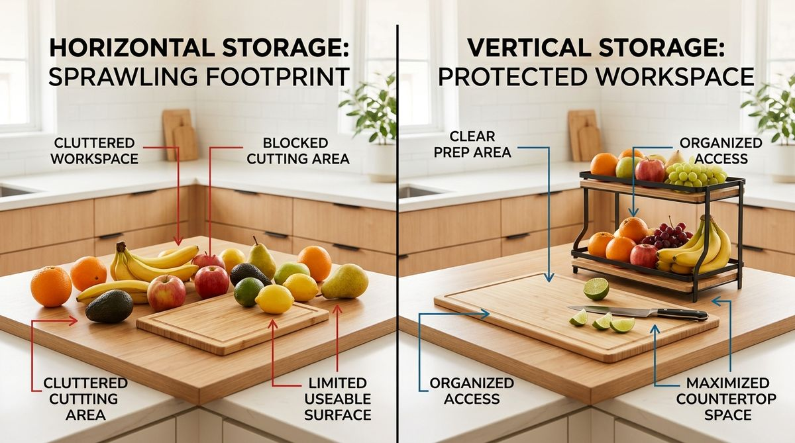
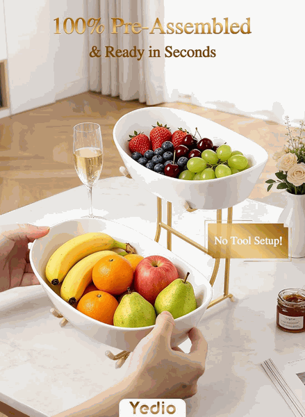
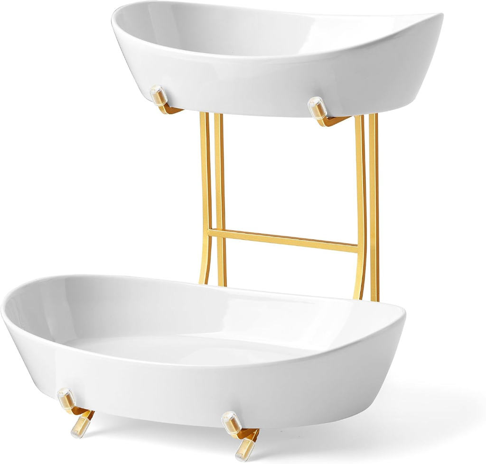

Fruit is one of those everyday categories that can quietly take over a small kitchen counter without you ever realizing how it happened.
You come home from the grocery store with good intentions: a bunch of bananas, a bag of crisp apples, a few ripe oranges, two avocados, and a punnet of lemons. You set the bananas on one corner of the counter, place the apples in a wide wooden bowl, and leave the citrus resting directly beside the microwave.
Within forty-eight hours, produce has sprawled across the entire prep surface. Individual pieces roll into the cutting area, banana stems crowd the coffee maker, and slicing an onion for dinner requires carefully shunting fruit aside just to lay down a standard cutting board.
When this happens, it is easy to assume the issue is simply buying too much produce. In reality, the problem is rarely the fruit itself. The problem is that an everyday category is consuming valuable horizontal workspace.
When an item needs to remain visible and accessible, the most effective spatial move is not hiding it in a dark cabinet. It is asking whether that category can occupy vertical height instead of horizontal width. Here is how to organize fruit on a small kitchen counter while keeping your meal prep zone completely protected.
Why Fruit Takes Over Small Kitchen Counters
Unlike canned beans, baking spices, or extra dish towels, fresh fruit has unique spatial demands that make traditional enclosed storage impractical:
- Intentional Visibility: We keep fruit on the counter on purpose. If apples and bananas are tucked into a low pantry bin or hidden behind solid refrigerator doors, they are quickly forgotten and spoil before anyone eats them.
- Accessibility for Fast Snacking: Produce needs to be within immediate arm's reach for children, roommates, and busy mornings.
- Natural Horizontal Sprawl: Unconstrained round objects naturally roll and scatter across flat planes whenever someone grabs one piece from the pile.
- Constrained Apartment Square Footage: In a rental or small apartment kitchen, you often have only 24 to 36 inches of contiguous food preparation counter between the sink and the range.
This reveals the critical distinction every small-space dweller needs to recognize: VISIBLE vs. SPRAWLING.
Keeping fruit visible is smart, healthy household management. But allowing that fruit to sprawl horizontally across your primary meal prep zone creates daily friction. The goal is never to hide your fresh produce—it is to contain its footprint so your kitchen remains calm and ready for cooking.
To see how flat surfaces impact your overall kitchen habits, explore our guide on 5 kitchen rules that make putting things away easier.
Why Vertical Storage Can Free Up Counter Space
When organizing a compact kitchen, most people instinctively think in two dimensions: “How can I fit all of these items across the surface of my counter?”
A much more powerful question to ask is: “Can this category use height instead of width?”
The Vertical Storage Principle:
HORIZONTAL STORAGE spreads across the workspace and robs you of prep area.
VERTICAL STORAGE uses elevated clearance to contain the category while drastically reducing its countertop footprint.

In standard kitchens, the vertical space between the countertop and the bottom of upper wall cabinets measures approximately 18 inches. That vertical air space is almost always completely empty. By elevating a second layer of produce directly above the first, you preserve your contiguous prep surface while keeping the entire fruit selection in plain sight.
For more ways to maintain clear counters between meals, check out our guide on the last-step rule for kitchen counter organization.
When Vertical Fruit Storage Makes Sense
Vertical storage is a targeted strategy, not an automatic fix for every kitchen. A tiered solution makes genuine sense under specific circumstances:
- Daily Produce Consumption: Your household eats fresh fruit daily and relies on visual prompts to grab a quick, healthy snack.
- Multiple Fruit Types: You keep different produce varieties simultaneously—for instance, heavier apples and oranges that need robust support alongside delicate stone fruit, berries, or bananas that bruise when stacked together.
- Severe Counter Constraints: Your kitchen has less than three feet of usable countertop, making every square inch of flat prep space invaluable.
- Clear Vertical Clearance: You have an open perimeter corner or an uninterrupted gap beneath your upper cabinets that can comfortably accommodate an elevated tier.
- No Interference With Prep: The elevated holder can be positioned outside your active knife and cutting board path.
Remember: accessibility is paramount. If placing fruit in an elevated holder forces you to reach awkwardly around a stand mixer or push past small appliances, the system will break down. The location must feel as effortless as setting an apple on the counter.
The 4-Step Counter Test
Before buying any storage container or moving items around, use this simple four-question diagnostic framework to evaluate your countertop:
The 4-Step Counter Diagnostic
- Identify the Counter Hog: What everyday category occupies more horizontal flat space than its utility justifies? (Often it is fresh fruit, coffee pods, or cooking oils).
- Ask If It Needs to Stay Visible: If the items lose their purpose when hidden (like fruit rotting in a drawer), acknowledge that they must remain visible. Do not force them into an out-of-sight cabinet.
- Look Up: Is there 12 to 18 inches of unused vertical space directly above or beside this zone that can carry the category upwards?
- Protect the Workspace: Does lifting this category vertically leave behind a continuous, unobstructed surface large enough for your daily cutting board and prep bowls?
You can apply this exact four-step diagnostic to other counter categories, such as spice racks, daily vitamins, or morning coffee supplies. To see how to apply similar space-saving boundaries to small appliances, read our guide on organizing small kitchen appliances without losing counter space.
How to Organize Fruit Without Losing Access
To implement an effortless, clutter-free fruit station on a small counter, follow this step-by-step practical sequence:
- Step 1: Choose an Inactive Perimeter Spot: Position your fruit station in a secondary zone—such as a back corner beside the refrigerator or near the microwave—rather than the prime center prep space between your sink and stove.
- Step 2: Group Produce Strictly in One Vessel: Eliminate loose pieces rolling across the perimeter. If fruit doesn't fit into the designated station, evaluate whether extra stock belongs in the crisper drawer until needed.
- Step 3: Separate by Weight and Ripeness: Place sturdier, heavier fruits (grapefruits, oranges, crisp apples) on the bottom tier. Reserve the upper tier for delicate, easily bruised items (bananas, peaches, small berries, grapes).
- Step 4: Keep a Clear Buffer Around the Station: Maintain at least 4 to 6 inches of empty counter around the base of the stand. This buffer prevents fruit from feeling visually crowded by adjacent appliances.
- Step 5: Avoid the Overfill Trap: Never pile produce past the rims. Overfilled tiers restrict air circulation, accelerate bruising, and cause items to spill over when reaching for a bottom piece.
- Step 6: Review Weekly With Your Real Routine: When wiping down the kitchen before a grocery run, inspect the base, compost any overripe pieces, and adjust tier assignments based on what your household is currently enjoying.
For more foundational tips on keeping surfaces clean and uncluttered, visit our core article on how to keep kitchen counters clear.
Why a Two-Tier Fruit Bowl Can Work
Now that the core organizational principle is clear, we can look at a specific physical implementation: the two-tier fruit bowl.
A two-tier stand is simply the physical expression of the vertical-space principle. Instead of demanding two separate wide bowls spread horizontally across your counter, it stacks two independent vessels on a shared, compact vertical frame.

When evaluated as an organization tool, a well-designed two-tier unit provides distinct practical advantages:
- Natural Category Division: Having separate upper and lower levels creates automatic separation. You can group quick-snack berries and grapes on top, while storing cooking citrus and baking apples below.
- Elevated Air Circulation: Raising produce off the flat counter surface promotes even ambient airflow around the fruit, helping prevent moisture buildup.
- Removable Components for Table Serving: Designs with lift-out ceramic bowls allow you to take the top tier directly to the dining table or breakfast nook during family meals, then slot it right back onto its frame.
- Zero Installation or Wall Drilling: Because it sits freely on the counter, it is completely renter-friendly and requires no complex mounting hardware.
Before vs. After: What Actually Changes?
The impact of shifting from horizontal sprawl to vertical containment is immediate. Here is how your kitchen experience transforms:
Where NOT to Put Your Fruit Bowl
Vertical storage only works when the location makes practical sense. Even the most elegant fruit stand will become a frustrating nuisance if placed in the wrong spot. Avoid these four problem locations:
- The Primary Prep Triangle: Do not place your fruit bowl in the direct line of sight between your cutting board, the sink, and the cooktop. That prime working counter must remain 100% free for active food prep.
- Directly Under Low Hanging Cabinets: If your upper cabinets have deep light rails or sit unusually low, ensure there is ample clearance to easily reach into the upper bowl without bumping your knuckles.
- Right Beside the Stovetop or Oven: The radiant heat from burners and ovens accelerates produce decay, softening citrus and overripening bananas within hours.
- Directly in Front of Appliance Doors: Keep the bowl clear of microwave door swing paths, toaster oven vents, and cabinet door hinges.
“Vertical storage is only an improvement if the physical location serves your real cooking routine.”
When a Two-Tier Bowl Is NOT the Right Solution
A core commitment at SpaceSavvyLiving is honest editorial guidance. A tiered fruit stand is not appropriate for every household, and you likely do not need one if:
- You Keep Very Little Room-Temperature Fruit: If your household typically only buys a couple of lemons or a single apple at a time, a small single bowl or ceramic saucer is far more proportionate.
- Your Produce Is Already Contained: If you already have a hanging fruit basket or a dedicated wire pantry drawer that keeps your counters clear, adding a countertop bowl would simply introduce unnecessary clutter.
- You Have Exceptionally Generous Counter Space: In large kitchens with wide kitchen islands, spreading produce out in a single decorative wooden tray may fit your aesthetic without impacting prep zones.
- Your Climate Demands Refrigeration: In hot, humid climates prone to fruit flies, storing most produce in refrigerated produce bins is often necessary regardless of counter size.
A Practical Example: Yedio 2-Tier Ceramic Fruit Bowl
If you have evaluated your kitchen, confirmed that produce needs to stay visible, and determined that vertical height is the right solution, here is an example of an organizer designed specifically around this principle.

Yedio 2-Tier Ceramic Fruit Bowl with Gold Metal Stand
An elevated, two-level produce holder featuring two curved white ceramic serving bowls supported by a structured gold-toned metal stand. It allows you to organize everyday fruit vertically rather than spreading it across your kitchen counter.
By stacking two distinct bowl sizes vertically, it cuts horizontal counter occupancy roughly in half while keeping fruits completely visible and accessible. The lift-out ceramic bowls can be washed easily or carried directly to the table.
- Two curved ceramic bowls with separate upper and lower tiers
- Structured gold metal frame provides elevated vertical clearance
- Pre-assembled setup requires no tools or complex assembly
- Glazed ceramic surface is easy to wipe down and maintain
- Freestanding design is 100% renter-friendly with zero drilling
Remember: tools like this are implementation aids. The long-term success of your kitchen comes from respecting your working zones and choosing storage solutions that support your real cooking habits.
Frequently Asked Questions
The key to storing fruit on a small counter is utilizing vertical storage rather than spreading items across horizontal surfaces. Group produce in an elevated multi-tier bowl or stand placed in an inactive corner, away from your primary chopping and cutting board prep zone.
Yes, a two-tier fruit bowl is ideal for small kitchens because it takes advantage of unused vertical height beneath upper cabinets while cutting the horizontal countertop footprint roughly in half.
Establish a defined physical boundary for fruit. Only display what your household realistically consumes over 3 to 5 days, keep items grouped in one elevated container, and resist spreading overflow produce onto adjacent meal prep surfaces.
Place your fruit bowl in an accessible perimeter corner, beside the refrigerator, or along an unused breakfast bar. Avoid placing it between the sink and stove or directly on your main cutting board workstation.
No. Only room-temperature produce that benefits from ongoing ripening or everyday snacking visibility—such as bananas, citrus, unripened avocados, apples, and pears—needs counter space. Fully ripe berries and cut fruits belong in the refrigerator.
Vertical storage is one of the most effective principles in small kitchens because countertop surface area is strictly limited, whereas vertical clearance below wall cabinets is often completely wasted.